IEPL全内网物理直通
完全绕开公共国际出口拥堵路段，数据包从国内多地高等级BGP机房直接驶入深港、沪日、沪美内网传输走廊，晚高峰依然保持平直心电图级低延迟。
汲取方程式空气动力学与实时遥测调度哲学，秒秒云通过多入口BGP融合与全内网IEPL物理专线，彻底消除晚高峰公网拥塞，为您带来指针刚动、画面即达的越洋网络加速实力。

从物理海底光缆专线直连到内核级流量整形，每一处细节均按照大奖赛排位赛标准严格调校，让每一次握手都缩短至微秒量级。
完全绕开公共国际出口拥堵路段，数据包从国内多地高等级BGP机房直接驶入深港、沪日、沪美内网传输走廊，晚高峰依然保持平直心电图级低延迟。
边缘遥测探针以每500毫秒一次的频率扫描全球落地机房负载与RTT抖动，一旦侦测到上游光缆波动，系统在用户零感知状态下自动切换至备用极速车道。
单节点接入万兆光纤阵列，结合自研BBRv3拥塞控制与长肥管道窗口调优，无论是百兆级设计原稿同步还是蓝光原盘拖拽进度条，均可瞬时跑满本地宽带上限。
全线支持TLS 1.3零往返加密与现代AEAD混淆传输，节点服务器采用无盘RAM内存态运行模式，断电即焚，不记录任何DNS查询与访问轨迹，捍卫数字主权。
部署覆盖全球40余个核心都市的原生ISP住宅与商宽双栈IP池，为您提供无门槛的流媒体解锁能力与AIGC生产力加速底座。
精准匹配港区、美区、日区、新区及英德本地家庭宽带出口，顺畅观看Netflix非自制剧、Disney+、YouTube 8K HDR、Max及动画疯，告别区域限制提示。
针对ChatGPT、Claude 3.5/4、Gemini、Midjourney及Sora云端视频渲染独立划分纯净高信誉IP段，杜绝429频繁验证码拦截与账号风控，流式响应顺滑到底。
支持UDP全锥形NAT（Full-Cone NAT）转发与高频小包优先队列，无论是iRacing、F1跨洲排位赛还是Steam/PS5联机对战，均能把抖动控制在1毫秒以内。
大幅加速GitHub仓库克隆、Docker镜像拉取、HuggingFace大模型权重下载及海外金融行情终端实时推送，让工程编译与跨国视频会议不再卡顿。
全系套餐均享无差别IEPL专线节点与原生流媒体解锁特权，按需选择您的发车配额，即刻发车。
解答关于秒秒云专线架构、客户端兼容性及流媒体/AI解锁策略的常见技术疑问。
普通公网节点的数据包必须经过竞争激烈的国际出口网关，每逢晚间20:00至23:00高峰期极易出现严重丢包与高延迟；而秒秒云全系采用高等级IEPL（国际以太网专线）物理通道，流量从国内BGP入口直接进入点对点光纤内网直达香港、东京、新加坡等海外核心交换中心，不受公网潮汐拥堵干扰，详情可参阅我们的秒秒云IEPL全专线加速架构深度拆解。
秒秒云提供全平台自适应订阅转换接口，完美兼容 Windows、macOS、iOS、Android、Linux 以及 OpenWrt / Asuswrt 软路由系统。您可以在仪表盘内一键导入 Clash Verge Rev、Mihomo Party、Shadowrocket、Quantumult X、Sing-box、Stash 及 Surge 等主流客户端，30秒内即可完成配置发车。
不会。秒秒云在接入层启用了支持连接迁移与0-RTT快速重连的现代传输协议栈，当您的手机从室内Wi-Fi步入蜂窝5G网络时，底层隧道可在数毫秒内完成会话热切换，保障您的跨国语音会议、长连接SSH终端及大模型长文本输出不断流。
来自跨境工程师、模拟赛车手、AIGC创作者与影音发烧友的真实遥测评价。
“团队每天高频调用 Claude 与 OpenAI API，还要在 HuggingFace 拉取几十GB的模型权重。换用秒秒云车队旗舰组后，不仅下载速度稳定跑满千兆光纤，而且原生纯净IP再也没弹过烦人的风控拦截。”
“跑欧洲服和美西服耐力赛最怕网络抖动导致幽灵撞车。秒秒云的深港与沪日IEPL专线把Ping值死死钉在一条直线上，连续三小时排位赛与正赛零丢包，简直就像在本地局域网发车一样跟手。”
“平时需要频繁向 Runway 和海外云盘上传4K未压缩素材，晚上还要在 Apple TV 上看 Netflix 杜比视界。秒秒云是我用过晚高峰表现最稳的机场推荐首选，进度条随便拖都是极速秒开。”
“我们对WebSocket实时行情流的毫秒级延迟极其敏感。秒秒云的多BGP入口自动容灾机制非常可靠，过去半年从未在交易时段掉过链子，技术工单响应速度也像F1进站换胎一样干脆利落。”